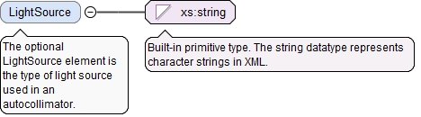
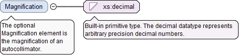

The optional LightSource element is the type of light source used in an autocollimator.
Diagram

Type
xs:string
Properties
content
simple
minOccurs
0
Source
<xs:element name="LightSource" type="xs:string" minOccurs="0"><xs:annotation><xs:documentation>The optional LightSource element is the type of light source used in an autocollimator.</xs:documentation></xs:annotation></xs:element>
<xs:element name="MeasuringAccuracy" type="AngularErrorType" minOccurs="0"><xs:annotation><xs:documentation>The optional MeasuringAccuracy element is the autocollimator measuring accuracy.</xs:documentation></xs:annotation></xs:element>
The optional Magnification element is the magnification of an autocollimator.
Diagram

Type
xs:decimal
Properties
content
simple
minOccurs
0
Source
<xs:element name="Magnification" type="xs:decimal" minOccurs="0"><xs:annotation><xs:documentation>The optional Magnification element is the magnification of an autocollimator.</xs:documentation></xs:annotation></xs:element>
<xs:element name="ApertureSize" type="LinearValueType" minOccurs="0"><xs:annotation><xs:documentation>The optional ApertureSize element is the autocollimator aperture size.</xs:documentation></xs:annotation></xs:element>
<xs:element name="MinMeasuringDistance" type="AngularValueType" minOccurs="0"><xs:annotation><xs:documentation>The optional MinMeasuringDistance element is the minimum angular measuring distance of an autocollimator.</xs:documentation></xs:annotation></xs:element>
<xs:element name="MaxMeasuringDistance" type="AngularValueType" minOccurs="0"><xs:annotation><xs:documentation>The optional MaxMeasuringDistance element is the maximum angular measuring distance of an autocollimator.</xs:documentation></xs:annotation></xs:element>
<xs:element name="ObjectiveFocalLength" type="LinearValueType" minOccurs="0"><xs:annotation><xs:documentation>The optional ObjectiveFocalLength element is the focal length of the objective for an autocollimator.</xs:documentation></xs:annotation></xs:element>
<xs:element name="FieldOfView" type="AngularValueType" minOccurs="0"><xs:annotation><xs:documentation>The optional FieldOfView element is the autocollimator field of view.</xs:documentation></xs:annotation></xs:element>
The required id attribute is the QIF id of the measurement resource, used for referencing.
Source
<xs:complexType name="AutocollimatorType"><xs:annotation><xs:documentation>The AutocollimatorType defines an autocollimator.</xs:documentation></xs:annotation><xs:complexContent><xs:extension base="UniversalDeviceType"><xs:sequence><xs:element name="LightSource" type="xs:string" minOccurs="0"><xs:annotation><xs:documentation>The optional LightSource element is the type of light source used in an autocollimator.</xs:documentation></xs:annotation></xs:element><xs:element name="MeasuringAccuracy" type="AngularErrorType" minOccurs="0"><xs:annotation><xs:documentation>The optional MeasuringAccuracy element is the autocollimator measuring accuracy.</xs:documentation></xs:annotation></xs:element><xs:element name="Magnification" type="xs:decimal" minOccurs="0"><xs:annotation><xs:documentation>The optional Magnification element is the magnification of an autocollimator.</xs:documentation></xs:annotation></xs:element><xs:element name="ApertureSize" type="LinearValueType" minOccurs="0"><xs:annotation><xs:documentation>The optional ApertureSize element is the autocollimator aperture size.</xs:documentation></xs:annotation></xs:element><xs:element name="MinMeasuringDistance" type="AngularValueType" minOccurs="0"><xs:annotation><xs:documentation>The optional MinMeasuringDistance element is the minimum angular measuring distance of an autocollimator.</xs:documentation></xs:annotation></xs:element><xs:element name="MaxMeasuringDistance" type="AngularValueType" minOccurs="0"><xs:annotation><xs:documentation>The optional MaxMeasuringDistance element is the maximum angular measuring distance of an autocollimator.</xs:documentation></xs:annotation></xs:element><xs:element name="ObjectiveFocalLength" type="LinearValueType" minOccurs="0"><xs:annotation><xs:documentation>The optional ObjectiveFocalLength element is the focal length of the objective for an autocollimator.</xs:documentation></xs:annotation></xs:element><xs:element name="FieldOfView" type="AngularValueType" minOccurs="0"><xs:annotation><xs:documentation>The optional FieldOfView element is the autocollimator field of view.</xs:documentation></xs:annotation></xs:element></xs:sequence></xs:extension></xs:complexContent></xs:complexType>